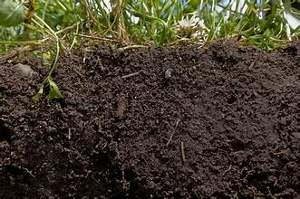
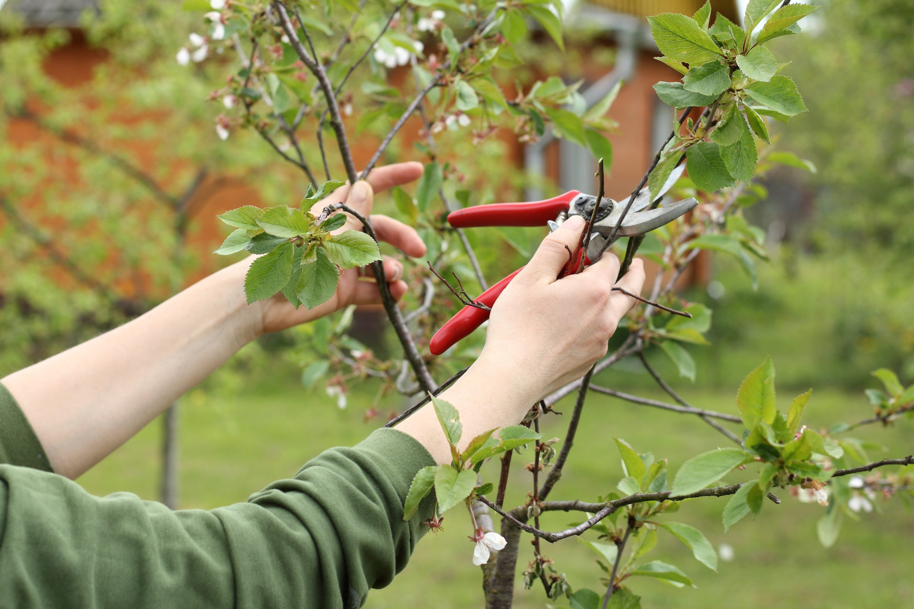

Outdoor plants need consistent watering, but avoid overwatering. Each plant differs in how often it needs watering,
so be sure to read the guide on the individual plant. Keep an eye on the weather as well! Rain can be a friend.
Most plants require at least 6 hours of sunlight a day, but it depends on the plant. Plants are either full-sun,
partial-sun, or partial-shade. Read the guide provided on the plant to decide where to plant it.

Plants will not grow without healthy roots, so it is important that plants have the right soil and drainage.
Fertilize the soil before planting and for a few weeks after. Adding rocks at the bottom of the hole can
also help improve drainage.

Mulch around plants every year to promote drainage and healthy soil. Prune plants when needed to encourage
stronger growth and better blooming in the next season.